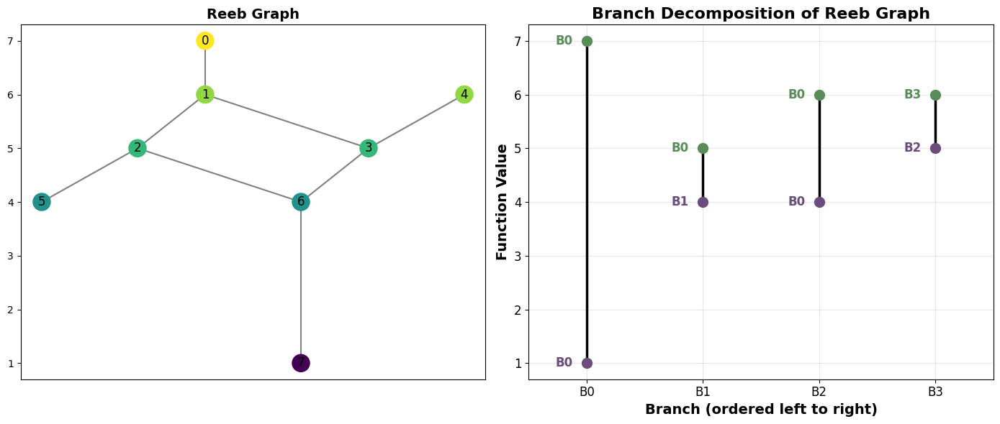
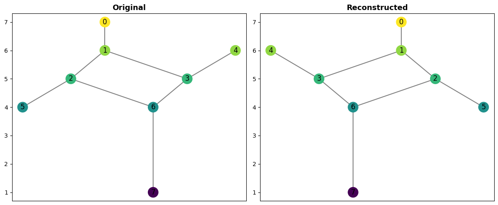
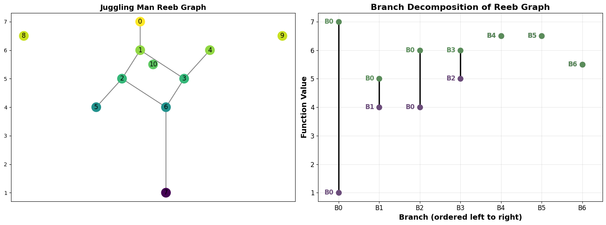

9. Tutorial: Branch Decomposition of a Reeb Graph
A branch decomposition breaks a Reeb graph into a collection of non-overlapping upward paths called branches. Each branch travels strictly upward in function value, starting at either a local minimum or a saddle point and ending at either a local maximum or another saddle point.
Each branch stores:
The function values at its two endpoints (
f_low,f_high)Attachment information: which earlier branch each endpoint belongs to (pointing to itself if it is a local min/max)
This tutorial follows the branch decomposition definition from Samira Jabry’s thesis, Unsmoothing of Reeb Graphs, Saint Louis University, 2025. Further developments will be presented in forthcoming work.
For the API and class reference, see the branch decomposition documentation page.
[1]:
import matplotlib.pyplot as plt
from cereeberus import ReebGraph
import cereeberus.data.ex_reebgraphs as ex_rg
from cereeberus.reeb.branchdecomp import BranchDecomp
9.1. A simple example: the dancing man
We’ll start with the dancing_man example graph, which is a connected Reeb graph with several saddle points.
[2]:
R = ex_rg.dancing_man()
fig, axes = plt.subplots(1, 2, figsize=(14, 6))
R.draw(ax=axes[0])
axes[0].set_title('Reeb Graph', fontsize=14, fontweight='bold')
bd = R.branch_decomp()
bd.draw(ax=axes[1])
plt.tight_layout()
plt.show()

The branch decomposition diagram shows each branch as a vertical line positioned at its function values. Labels next to each endpoint indicate which branch that endpoint is attached to:
Purple (lower endpoint): the branch ID whose path contains this vertex
Green (upper endpoint): the branch ID whose path contains this vertex
When a label matches the branch’s own ID, that endpoint is a local min or max (no other branch claims it).
9.2. Inspecting the branches
The branches are stored as an \(n \times 4\) numpy array. Each row is one branch:
Column |
Meaning |
|---|---|
0 |
|
1 |
|
2 |
|
3 |
|
[3]:
print("Branches (f_low, f_high, low_attach, high_attach):")
print(bd.branches)
Branches (f_low, f_high, low_attach, high_attach):
[[1. 7. 0. 0.]
[4. 5. 1. 0.]
[4. 6. 0. 0.]
[5. 6. 2. 3.]]
[4]:
# You can also inspect individual branches and their vertex paths
for i in range(len(bd.branches)):
print(f"Branch {i}: f=[{bd.branches[i,0]}, {bd.branches[i,1]}] "
f"attaches=({int(bd.branches[i,2])}, {int(bd.branches[i,3])}) "
f"path={bd.get_branch_path(i)}")
Branch 0: f=[1.0, 7.0] attaches=(0, 0) path=[7, 6, 2, 1, 0]
Branch 1: f=[4.0, 5.0] attaches=(1, 0) path=[5, 2]
Branch 2: f=[4.0, 6.0] attaches=(0, 0) path=[6, 3, 1]
Branch 3: f=[5.0, 6.0] attaches=(2, 3) path=[3, 4]
9.3. Reconstructing the Reeb graph
Once you have a branch decomposition, you can reconstruct the original Reeb graph exactly from it using reconstruct().
[5]:
R2 = bd.reconstruct()
fig, axes = plt.subplots(1, 2, figsize=(12, 5))
R.draw(ax=axes[0])
axes[0].set_title('Original', fontsize=13, fontweight='bold')
R2.draw(ax=axes[1])
axes[1].set_title('Reconstructed', fontsize=13, fontweight='bold')
plt.tight_layout()
plt.show()
print(f"Original: {R}")
print(f"Reconstructed: {R2}")

Original: ReebGraph with 8 nodes and 8 edges.
Reconstructed: ReebGraph with 8 nodes and 8 edges.
9.4. Handling isolated vertices: the juggling man
The juggling_man graph has isolated vertices (vertices with no edges), representing disconnected components. These are handled as degenerate branches where f_low == f_high and both attachment IDs point to the branch itself.
[6]:
J = ex_rg.juggling_man()
fig, axes = plt.subplots(1, 2, figsize=(16, 6))
J.draw(ax=axes[0])
axes[0].set_title('Juggling Man Reeb Graph', fontsize=14, fontweight='bold')
bd_j = J.branch_decomp()
bd_j.draw(ax=axes[1])
plt.tight_layout()
plt.show()

[7]:
# Identify the degenerate branches (isolated vertices)
print("Degenerate branches (isolated vertices):")
for i, (f_low, f_high, low_a, high_a) in enumerate(bd_j.branches):
if f_low == f_high:
print(f" Branch {i}: vertex={bd_j.get_branch_path(i)}, f={f_low}, "
f"attaches=({int(low_a)}, {int(high_a)})")
Degenerate branches (isolated vertices):
Branch 4: vertex=[8], f=6.5, attaches=(4, 4)
Branch 5: vertex=[9], f=6.5, attaches=(5, 5)
Branch 6: vertex=[10], f=5.5, attaches=(6, 6)
9.5. Summary
The BranchDecomp class provides:
decompose(R)— compute the decomposition from aReebGraphbranches— the \(n \times 4\) array of branch dataget_branch(i)— return row \(i\) of the branches arrayget_branch_path(i)— return the list of vertices in branch \(i\)reconstruct()— rebuild the originalReebGraphfrom the stored pathsdraw()— visualise the decomposition
You can also call R.branch_decomp() directly on any ReebGraph or MapperGraph as a shortcut.